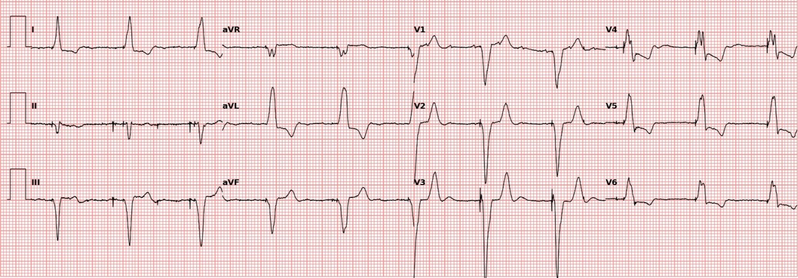
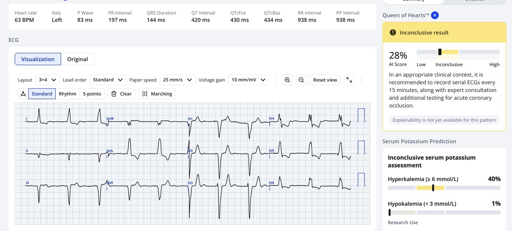
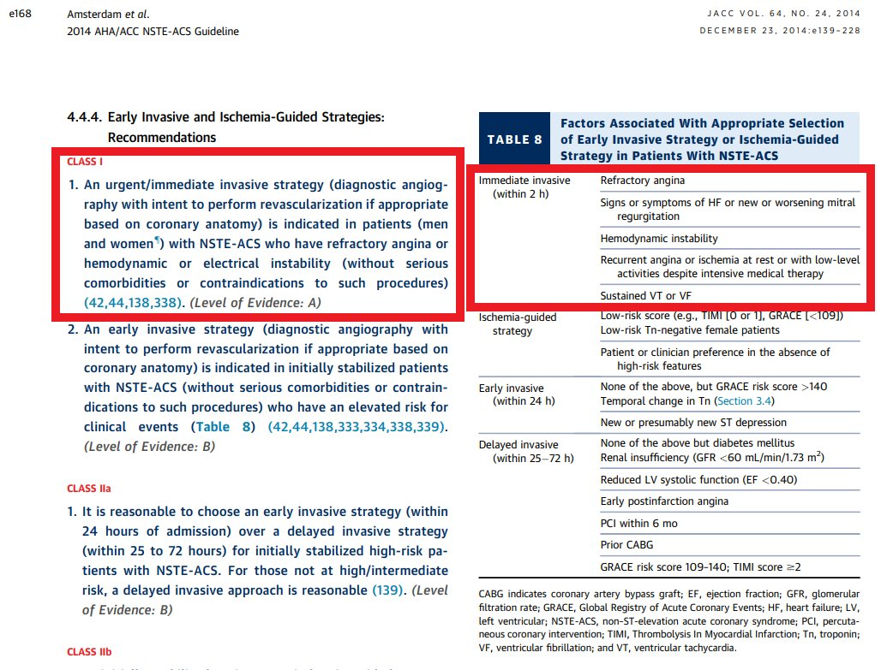
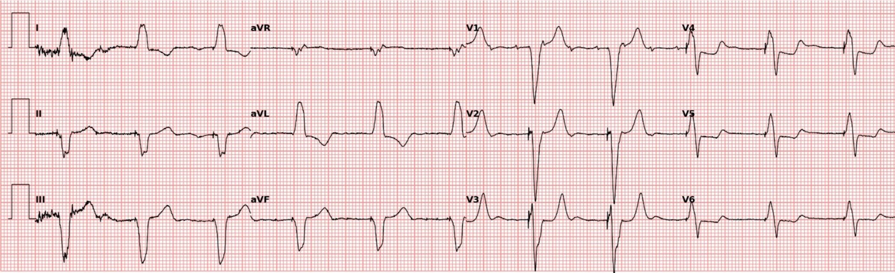
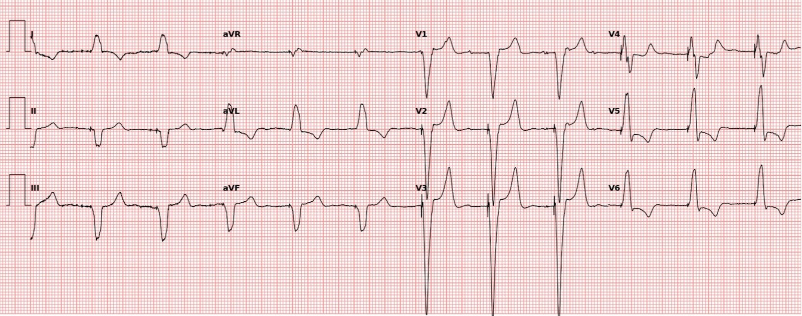
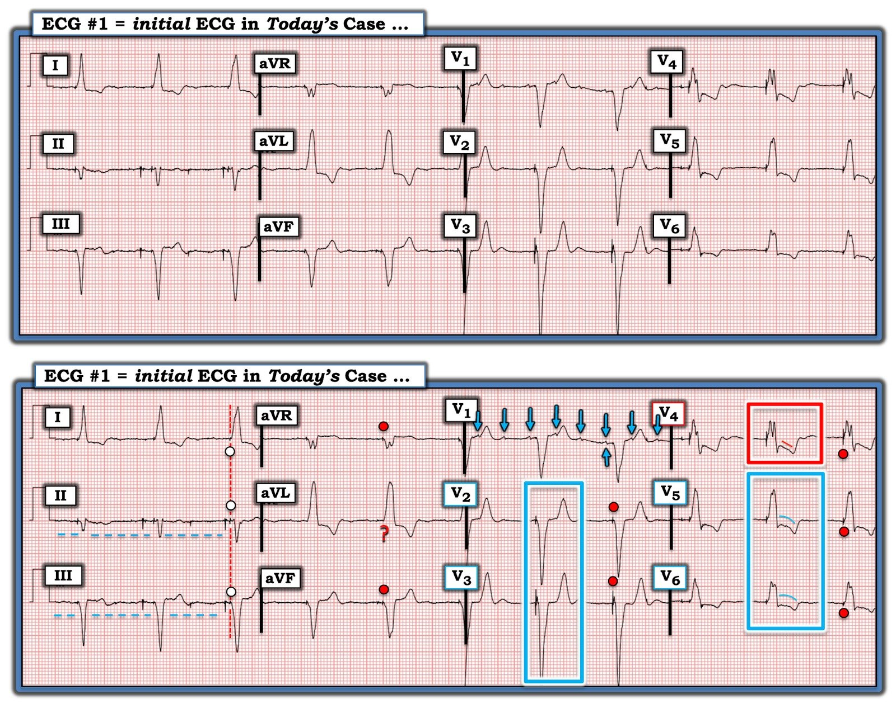

19/07/2024 — Nam giới ngoài 80 tuổi đau ngực với nhịp tạo nhịp thất
Bản dịch tiếng Việt của bài "A man in his 80s with Chest Pain and a Ventricular-Paced Rhythm" – Dr. Smith’s ECG Blog. Giữ nguyên toàn bộ 6 hình ảnh của bản gốc.
Bài viết của Pendell Meyers, Smith biên tập.
= = =
Một nam giới ngoài 80 tuổi đến khám vì đau ngực cấp, dấu hiệu sinh tồn bình thường.
- Đây là điện tâm đồ lúc phân loại (triage) của ông, tại thời điểm = 0:


Bạn nghĩ gì? (Không có điện tâm đồ cũ để so sánh).
= = =
= = =
Điện tâm đồ cho thấy nhịp tạo nhịp thất với các dấu hiệu rất nghi ngờ OMI thành sau, bao gồm đoạn ST đẳng điện một cách không tương xứng ở V2-V3 (Theo nguyên lý ngược hướng tương xứng, chúng ta biết rằng ở các chuyển đạo này lẽ ra phải có ST chênh lên (STE) ngược hướng tương xứng).
Phức bộ cuối cùng ở V2 thực ra có một chút chênh xuống đồng hướng rất nhỏ, dù chưa tới 1.0 mm. Như vậy, điện tâm đồ này đáp ứng một trong các phiên bản thay thế của tiêu chuẩn Sgarbossa cải biên mà chúng tôi đã nghiên cứu, nhưng không đáp ứng định nghĩa chính mà công trình công bố tập trung vào.
Còn có ST chênh xuống (STD) ngược hướng quá mức ở V4 (đây là chuyển đạo chuyển tiếp trong ca này, nhưng có thành phần hướng lên lớn hơn thành phần hướng xuống).
- Tỷ lệ ST/R ở V4 là 2/5.5 = 36%.
- Trong nghiên cứu xây dựng tiêu chuẩn của chúng tôi ở LBBB, tỷ lệ > 30% có độ nhạy gần 100% và độ đặc hiệu 88%.
- Trong nghiên cứu thẩm định, tỷ lệ này vẫn có độ đặc hiệu 98% nhưng độ nhạy chỉ còn 64%. (Chúng tôi không đánh giá tiêu chí này trong nghiên cứu về nhịp tạo nhịp thất, nhưng không có lý do gì để nó không áp dụng được.)
Nếu bạn hiểu về phức bộ QRS rộng và sự ngược hướng tương xứng — bạn sẽ hiểu rằng điện tâm đồ này cho thấy ST chênh xuống do thiếu máu cục bộ, tối đa ở V1-V4 — đây là đặc điểm tốt nhất và đơn giản nhất hiện có mà chúng tôi đã nghiên cứu để nhận diện OMI thành sau. Điện tâm đồ này thể hiện dấu hiệu tương đương — nhưng trong nhịp tạo nhịp thất (nhưng không đáp ứng tiêu chuẩn STD đồng hướng ở V1-V3).
- Điện tâm đồ này được bác sĩ điều trị và bác sĩ tim mạch đọc lại (overread) kết luận là “Tạo nhịp, không có STEMI.”
Vì bệnh nhân vẫn còn đau và troponin ban đầu dương tính và đang tăng, ông được chẩn đoán “NSTEMI” và nhập viện mà không có kế hoạch thông tim cấp cứu.
- Queen of Hearts đánh giá thế nào?


Như bạn thấy, cô ấy không chắc chắn, nhưng không nói “Không có STEMI”. Cô ấy lo ngại đây có thể là OMI và khuyên ghi lại điện tâm đồ nhiều lần.
= = =
Nhưng chẳng phải đau ngực kéo dài trong NSTEMI là chỉ định chụp mạch vành cấp cứu theo hướng dẫn hay sao?


Đúng vậy, nhưng trong thực hành thông thường, theo kinh nghiệm của tôi và của nhiều người khác — khuyến cáo này rất hiếm khi được tuân thủ. Thực tế, trong nghiên cứu duy nhất mà tôi biết có khảo sát vấn đề này, chỉ 6.4% bệnh nhân NSTEMI nguy cơ rất cao được chụp mạch vành trong vòng dưới 2 giờ theo đúng hướng dẫn ACC/AHA 2014.
Lupu và cs. Tạp chí Clinical Cardiology, 2022;1-11 — Immediate and early percutaneous coronary intervention in very high risk and high risk non-ST segment elevation myocardial infarction patients (Can thiệp mạch vành qua da tức thì và sớm ở bệnh nhân nhồi máu cơ tim không ST chênh lên nguy cơ rất cao và nguy cơ cao).
= = =
12 giờ sau khi nhập viện, vẫn còn đau và troponin tiếp tục tăng, đây là điện tâm đồ ghi tiếp theo:


Các dấu hiệu tương tự, STD ở V4-V6 rõ hơn một chút, nhưng xét theo tỷ lệ vẫn tối đa ở V3-V4.
Vì troponin T là 1521 ng/L (troponin T đỉnh trên 1000 ng/L là điển hình của STEMI) và vẫn đang tăng — không đo thêm troponin nữa.
- Cuối cùng, 60 giờ sau khi nhập viện, chụp mạch vành cho thấy tắc cấp (ít nhất đã 60 giờ) ở động mạch thủ phạm là đoạn gần động mạch mũ trái, và đã được PCI.
= = =
Đây là điện tâm đồ vài giờ sau PCI:


Tái lập ST chênh lên ngược hướng tương xứng như dự kiến ở V2-V3, STD ở V4 đang hồi phục.
= = =
Chẩn đoán cuối cùng: NSTEMI.
- Đáng tiếc, không rõ thêm diễn tiến nào khác (siêu âm tim, sống còn, v.v.).
- Chẩn đoán phải là OMI! Và đây là một ca OMI bị bỏ sót.
= = =
Tiêu chuẩn Sgarbossa cải biên theo Smith:
- 1. STE đồng hướng 1 mm ở một hoặc nhiều chuyển đạo.
- 2. Blốc nhánh trái (LBBB): STD đồng hướng 1 mm ở V1-V3.
- 2. Nhịp tạo nhịp thất (VPR): STD đồng hướng 1 mm ở V1-V6.
- 3a. STE ngược hướng quá mức xét theo tỷ lệ ở bất kỳ chuyển đạo nào có STE ít nhất 1 mm và tỷ lệ ST/S > 20-25%.
— HOẶC —
- 3b. Bất kỳ ST chênh xuống ngược hướng quá mức nào có tỷ lệ ST/R > 30%.
= = =
Tài liệu tham khảo:
- Smith SW, Dodd KW, Henry TD, Dvorak DM, Pearce LA. Diagnosis of ST-elevation myocardial infarction in the presence of left bundle branch block with the ST-elevation to S-wave ratio in a modified Sgarbossa rule. Tạp chí Ann Emerg Med [Internet], 2012;60:766–776.
- Meyers HP, Limkakeng AT Jr, Jaffa EJ, Patel A, Theiling BJ, Rezaie SR, Stewart T, Zhuang C, Pera VK, Smith SW. Validation of the modified Sgarbossa criteria for acute coronary occlusion in the setting of left bundle branch block: A retrospective case-control study. Tạp chí Am Heart J [Internet], 2015;170:1255–1264.
- Dodd KW, Zvosec DL, Hart MA, Glass G 3rd, Bannister LE, Body RM, Boggust BA, Brady WJ, Chang AM, Cullen L, Gómez-Vicente R, Huis In ’t Veld MA, Karim RM, Meyers HP 3rd, Miranda DF, Mitchell GJ, Reynard C, Rice C, Salverda BJ, Stellpflug SJ, Tolia VM, Walsh BM, White JL, Smith SW, các nhà nghiên cứu PERFECT (Danh sách đầy đủ các nhà nghiên cứu PERFECT có trong Phụ lục E1, xem tại http://www.annemergmed.com). Electrocardiographic Diagnosis of Acute Coronary Occlusion Myocardial Infarction in Ventricular Paced Rhythm Using the Modified Sgarbossa Criteria. Tạp chí Ann Emerg Med [Internet], 2021.
Tài liệu tham khảo khác:
- Lindow T, Mokhtari A, Nyström A, Koul S, Smith SW, Ekelund U. Comparison of diagnostic accuracy of current left bundle branch block and ventricular pacing ECG criteria for detection of occlusion myocardial infarction. Tạp chí Int J Cardiol [Internet], 2023;131569.
- Khawaja M, Thakker J, Kherallah R, Ye Y, Smith SW, Birnbaum Y. Diagnosis of Occlusion Myocardial Infarction in Patients with Left Bundle Branch Block and Paced Rhythms. Tạp chí Curr Cardiol Rep [Internet], 2021;23:187.
= = =
Đừng dùng quy tắc Barcelona:
- Barcelona Rule on Left Bundle Branch Block: Lots of Issues (Quy tắc Barcelona trong blốc nhánh trái: nhiều vấn đề).
= = =
==================================
BÌNH LUẬN CỦA TÔI, bởi KEN GRAUER, MD (19/7/2024 — Cập nhật cho WordPress ngày 16/9/2026):
Đọc điện tâm đồ tạo nhịp ở bệnh nhân đau ngực mới (Chest Pain — CP) luôn là một thách thức. Dù vậy — như chúng tôi đã trình bày trong nhiều bài trên Dr. Smith’s ECG Blog (Xem bình luận của tôi trong các bài ngày 5 tháng Mười năm 2020 và ngày 3 tháng Mười năm 2018) — thường sẽ có manh mối gợi ý OMI trên điện tâm đồ tạo nhịp — NẾU bạn biết cách tìm chúng.
- Để rõ ràng, trong Hình 1 — tôi đã đánh dấu điện tâm đồ ban đầu của ca hôm nay. Ngoài nghi ngờ mạnh mẽ OMI cấp trên bản ghi này (như bác sĩ Meyers đã bàn luận ở trên) — tôi muốn lưu ý một số khía cạnh bổ sung khi đọc bản ghi 12 chuyển đạo có tạo nhịp ở bệnh nhân đau ngực, đặc biệt tập trung vào những thách thức của ca hôm nay.
- Vì việc xử lý sự cố máy tạo nhịp khá phức tạp — tôi rất vui khi tìm thấy tài liệu “nhập môn” trực tuyến tuyệt vời (có hình minh họa mã hóa màu) của bác sĩ Harry Mond — trình bày một cách tiếp cận dễ sử dụng cho câu hỏi — “Tôi đang tạo nhịp từ đâu?” — có thể xác định dựa trên hình dạng điện tâm đồ 12 chuyển đạo (Xem CardioScan — ngày 5 tháng Năm năm 2021).
= = =
Áp dụng vào điện tâm đồ ban đầu của ca hôm nay:
Tôi thấy điện tâm đồ ban đầu của ca hôm nay không hề đơn giản. Áp dụng các khái niệm từ cách tiếp cận của bác sĩ Mond — quá trình suy luận của tôi như sau:
- Dù không có dải nhịp chuyển đạo dài trong Hình 1 — chúng ta vẫn xác định được nhịp là tạo nhịp thất. Đó là vì các vòng tròn ĐỎ nhỏ đánh dấu các gai tạo nhịp thất thấy ngay trước QRS ở nhiều chuyển đạo.
- LƯU Ý #1: Như thường gặp — gai tạo nhịp không thấy ở mọi chuyển đạo (Không thấy gai tạo nhịp trước QRS ở chuyển đạo aVL hay chuyển đạo V1). Những yếu tố như vị trí đặt máy tạo nhịp trong thất, cũng như cài đặt bộ lọc, là một trong các lý do khiến gai tạo nhịp không phải lúc nào cũng thấy ở mọi chuyển đạo (Xem bình luận của tôi ở cuối trang trong bài ngày 13 tháng Một năm 2024 trên Dr. Smith’s ECG Blog).
- Tình huống phức tạp hơn ở các chuyển đạo I,II,III ghi đồng thời — vì có nhiễu đường nền đáng kể (xảy ra trên các đường chấm XANH ở chuyển đạo II và III trong Hình 1). Vì vậy — lúc đầu tôi tưởng có tạo nhịp nhĩ! Chỉ sau khi nhận ra mình không thể tìm thấy bất kỳ sự nhất quán nào trong các dao động đường nền thất thường này — tôi mới nhận ra là không có tạo nhịp nhĩ.
Điểm MẤU CHỐT: Đôi khi thật khó trả lời một câu hỏi tưởng chừng đơn giản là điện tâm đồ trước mặt chúng ta có (hay không) phải của một bệnh nhân mang máy tạo nhịp!
- Nếu không có các chuyển đạo trước tim — tôi sẽ không nghĩ rằng bệnh nhân hôm nay có máy tạo nhịp nếu chỉ dựa vào hình dạng của các chuyển đạo chi.
- Chỉ vì tôi biết từ các chuyển đạo trước tim rằng các vòng tròn ĐỎ nhỏ trong Hình 1 là gai tạo nhịp thất — nên tôi mới có thể suy ra rằng các vòng tròn TRẮNG nhỏ đánh dấu gai tạo nhịp thất ở các chuyển đạo I,II,III.
- Lưu ý rằng phức bộ QRS ở chuyển đạo II trông hẹp một cách đánh lừa! Như đường thẳng đứng chấm chấm màu ĐỎ cho thấy (được căn theo thời điểm khởi đầu QRS ở các chuyển đạo I và III ghi đồng thời) — phần đầu của phức bộ QRS ở chuyển đạo II nằm trên đường nền. Điều này nhấn mạnh tầm quan trọng của việc dùng nhiều hơn một chuyển đạo cho các phép xác định khác nhau trên điện tâm đồ, chẳng hạn như “độ rộng” QRS, vốn có thể bị sai lệch nếu chỉ dùng một chuyển đạo duy nhất.
LƯU Ý #2: Tôi luôn thích tìm xem có nhịp nền hay không trên các bản ghi có máy tạo nhịp. BẠN có nhận thấy rằng nhịp nền trong Hình 1 có vẻ là nhịp nhanh nhĩ không? (các mũi tên XANH xuất hiện đều đặn ở chuyển đạo V1 với tần số ~190/phút). Ít nhất thì có vẻ có blốc AV mức độ cao — đó có thể là lý do bệnh nhân được đặt máy tạo nhịp.
- Điều đáng chú ý là hoạt động nhĩ nền chỉ thấy được ở chuyển đạo V1. Dù vậy — tôi tin đây là hoạt động nhĩ “thật”, vì khoảng P-P rất chính xác trong số ít nhát mà chúng ta thấy ở chuyển đạo V1.
= = =
Hình 1: Để tiện so sánh — tôi đặt điện tâm đồ ban đầu của ca hôm nay phía trên phiên bản có đánh dấu của bản ghi này.


= = =
Nhịp được tạo từ vị trí nào trong tâm thất?
Theo tài liệu hướng dẫn cơ bản (primer) của Dr. Mond — hình dạng blốc nhánh cho chúng ta biết thất nào được tạo nhịp trước.
- NẾU có hình dạng LBBB (xác định bằng QRS âm ưu thế ở chuyển đạo V1) — thì RV là thất được tạo nhịp trước.
- Ngược lại, nếu có hình dạng RBBB (xác định bằng QRS dương ở chuyển đạo V1) — thì LV là thất được tạo nhịp trước. Lý do thường gặp nhất để tạo nhịp LV trước là tạo nhịp hai thất (thường biểu hiện trục mặt phẳng trán lệch phải).
- Thuật ngữ: Lý do dùng từ “hình dạng” (configuration) (chứ không phải blốc nhánh) — là vì dù hình ảnh điện tâm đồ trông như vậy, khi có tạo nhịp thất — sự khử cực không đi qua hệ thống dẫn truyền.
Trước đây — vị trí truyền thống để tạo nhịp RV là từ mỏm RV. Vì lý do sinh lý, những năm gần đây có xu hướng ưu tiên tạo nhịp RV từ một vị trí cao hơn trong thất phải.
- Điểm MẤU CHỐT: Với tạo nhịp RV — việc các chuyển đạo trước tim bên có hay không có sóng R cho biết điện cực tạo nhịp được đặt ở đâu trong buồng thất phải.
- Khi tạo nhịp từ mỏm RV — sẽ có hình dạng LBBB (tức là với QRS âm ở chuyển đạo V1) — trong đó QRS vẫn âm cho tới tận chuyển đạo V6.
- Khi tạo nhịp từ RVOT (đường ra thất phải) — sẽ có hình dạng LBBB với hình ảnh LBBB điển hình hơn ở các chuyển đạo trước tim (tức là QRS âm ở các chuyển đạo phía trước — nhưng QRS dương ở các chuyển đạo trước tim bên, bắt đầu từ chuyển đạo V4 hoặc V5 — và vẫn dương ở V6). Trục mặt phẳng trán lệch phải.
- Khi tạo nhịp từ giữa RV — sẽ có hình dạng LBBB, với hình ảnh LBBB điển hình hơn ở các chuyển đạo trước tim. Trục mặt phẳng trán có xu hướng bình thường hoặc lệch trái (tùy theo điện cực tạo nhịp được đặt cao đến mức nào).
= = =
Đối với CA BỆNH hôm nay:
Hình thái QRS của các nhát tạo nhịp thất trong Hình 1 biểu hiện một kiểu dẫn truyền rất giống với dẫn truyền LBBB (tức là QRS âm ở các chuyển đạo trước tim phía trước — QRS dương ở các chuyển đạo trước tim bên). Trục mặt phẳng trán lệch trái (dương hoàn toàn ở chuyển đạo I — âm ở chuyển đạo aVF).
- Hình thái QRS được mô tả cho điện tâm đồ trong Hình 1 phù hợp với tạo nhịp RV từ thành giữa RV. Tầm quan trọng của việc nhận ra hình ảnh này — là nó giúp chúng ta đánh giá một hình ảnh ST-T có thể phù hợp hoặc không phù hợp khi xét đến hình thái QRS của các nhát tạo nhịp.
- Tôi ưu tiên một cách tiếp cận định tính để đánh giá ST-T của các nhát tạo nhịp. Ở một bệnh nhân có QRS giãn rộng do tạo nhịp và CP mới xuất hiện — tôi bắt đầu nghi ngờ một biến cố tim cấp khi các thay đổi ST-T trông như thể chúng không nên có ở đó.
- Chuyển đạo bất thường nhất trong Hình 1 là chuyển đạo V4 (trong hình chữ nhật ĐỎ). Với sóng R tương đối nhỏ ở chuyển đạo V4 — không thể nào mức điểm J chênh xuống và hình dạng đoạn ST dốc xuống ở chuyển đạo này lại là bình thường.
- Trong bối cảnh ST-T ở chuyển đạo V4 chắc chắn bất thường — ST dạng vòm (coving) và mức điểm J chênh xuống ở chuyển đạo V5 là không tương xứng (trong hình chữ nhật XANH). Tương tự — ST dạng vòm ở chuyển đạo V6 có vẻ là sự tiếp nối của các bất thường thấy ở các chuyển đạo lân cận V4,V5.
- Cuối cùng — các sóng T thanh mảnh, cân đối, nhọn với đáy hẹp ở các chuyển đạo V2 và V3 (trong các hình chữ nhật XANH) — chắc chắn là không bình thường. Giả sử K+ huyết thanh bình thường — ở một bệnh nhân có CP mới, các sóng T nhọn này ở các chuyển đạo V2,V3 có thể biểu hiện tái tưới máu thành sau.
- ĐIỀU CỐT LÕI: Ở người đàn ông lớn tuổi này có CP mới và điện tâm đồ tạo nhịp — 5 chuyển đạo bất thường (trong các hình chữ nhật màu ở Hình 1) phải được giả định là biểu hiện OMI cấp cho đến khi được chứng minh ngược lại.
= = =
= =